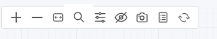

コンソールの操作
コンソールへのアクセス
デフォルトのユーザー名とパスワードはadminです。
最初のセクション「基本」→「マネージャーに接続」では、httpsを無効にする、ポート8443が許可されていない企業ファイアウォール経由でコンソールにアクセスする、または自己署名証明書を置き換えるなどの設定オプションを確認してください。

ダッシュボード
ダッシュボードには、SUSE® Securityによって検出されたリスクスコア、セキュリティイベント、アプリケーションプロトコルの概要が表示されます。これらのセキュリティイベントのいくつかの詳細も表示されます。ダッシュボードから生成できるPDFレポートには、詳細なチャートと説明が含まれています。
ダッシュボードの上部には、クラスター内のセキュリティリスクの概要があります。全体のリスクスコアの隣にあるレンチツールをクリックすると、リスクスコアを減少/改善するための推奨手順を案内するウィザードが開きます。各リスクゲージにマウスを合わせると、右側にその説明とリスクスコアを改善する方法が表示されます。セキュリティリスクスコアの改善に関する別のドキュメントセクションもご覧ください。

-
全体のセキュリティリスクスコア。これは、右側に要約された個々のリスク領域の加重概要であり、サービスの露出、インバウンド/アウトバウンド露出および脆弱性悪用リスクが含まれます。スコアを改善するには、レンチをクリックしてください。
-
サービスの露出リスクスコア。これは、ホワイトリストルールによって保護され、モニターまたはプロテクトモードで実行されているサービスの数を示す指標であり、リスクが最も低いです。ディスカバーモードのサービスの比率が高い場合、これらのサービスはホワイトリストルールによってセグメント化または隔離されていないことを意味します。
-
インバウンド/アウトバウンドリスクスコア。これは、インバウンドまたはアウトバウンド（クラスター外）接続で検出された実際の脅威やネットワーク違反の加重された要約であり、許可されたインバウンド/アウトバウンド接続も含まれます。ホワイトリストルールによって保護された外部接続はリスクが低いですが、埋め込まれたネットワーク攻撃によって攻撃される可能性があります。注意:インバウンドおよびアウトバウンドのIPリストは、「Exposure Report」としてインバウンド/アウトバウンド詳細セクションからダウンロードできます。
-
脆弱性悪用リスクスコア。これは、実行中のコンテナにおける脆弱性の悪用のリスクです。高い重要度の脆弱性を持つディスカバーモードのサービスは、リスクが最も高いため、スコアに最も大きな影響を与えます。サービスがモニターまたはプロテクトにある場合でも、高い脆弱性がある場合、ネットワークおよびプロセスルールによって疑わしい活動を特定（およびブロック）するために保護されているため、スコアへの影響は低くなります。自動実行スキャンのためにAuto-Scanボタンが有効でない場合、警告が表示されます。
いくつかのチャートはインタラクティブであり、以下の緑の矢印で示されています。

ダッシュボードに表示されるイベントデータの一部には、レポートセクションで説明されている制限があります。
検出されたアプリケーションプロトコル このチャートは、クラスター内のライブ接続で検出されたアプリケーションプロトコルを要約しています。カテゴリ ‘Other’ は、認識されていないHTTPプロトコルまたは生のTCP接続を意味します。アプリケーションカバレッジとアプリケーションボリュームレベルの間で切り替えることができます。
-
アプリケーションカバレッジは、アプリケーションサービス間で検出されたユニークなポッド間の会話の数です。例えば、サービスポッドAがHTTPを使用してサービスポッドBに接続する場合、それは1つのユニークなHTTP '`conversation’ですが、AとBの間のすべての接続は1つの会話としてカウントされます。
-
アプリケーションボリュームは、そのプロトコルを使用するすべてのサービスのネットワーク活動をGバイト単位で測定したものです。
ネットワーク活動
これは、コンテナとコンテナ間の会話のグラフィカルマップを提供します。他のローカルおよび外部リソースとの接続も表示されます。モニターおよび保護モードでは、違反が検出されたことを示すために、赤または黄色の線で違反が表示されます。
|
多数のコンテナまたはサービスが存在する場合、表示は自動的にネームスペースビュー（折りたたまれた状態）にデフォルト設定されます。ネームスペースアイコンをダブルクリックして開く。 |
|
この表示は、利用可能な場合はローカルGPUを使用して読み込み時間を短縮します。一部のWindows GPUには既知の問題があり、GPUの使用は詳細フィルタウィンドウでオフにすることができます（ツールについては下記参照）。 |
可能なアクションの一部は次のとおりです：
-
特定のオブジェクトをその完全な名前または正確な名前で迅速に見つけるための機能。ポリシー > グループに移動して、次のものを見つけることができます：
-
ポッドまたはコンテナ
-
ノード
-
グループ
-
-
オブジェクトを移動して、サービスや会話をよりよく表示します。
-
任意の線（矢印）をクリックして、プロトコル/ポート、最新のタイムスタンプ、ルールの追加または編集などの詳細を表示します（注意：接続の詳細を表示するには、両方の接続エンドポイントをそれぞれダブルクリックして完全に展開する必要があります）。
-
任意のコンテナをクリックして詳細を表示し、リアルタイム接続の'`i’を確認します。ここからノードを隔離することもできます。コンテナを右クリックしてアクションを実行します。
-
プロトコルでビューをフィルタリングするか、ネームスペース、グループ、コンテナ（右上）で検索します。選択ボックスに複数のフィルタを追加できます。
-
最新の会話を表示するためにマップを更新します
-
論理ビュー（すべてのコンテナがサービスグループに折りたたまれている）または物理ビュー（同じサービスのすべてのコンテナが表示される）に切り替えるためにズームイン/アウトします
-
ロードバランサーなどのオーケストレーションコンポーネントの表示をオン/オフに切り替えます（例：KubernetesやSwarm向けのビルトイン機能があります）。
-
（サービスメッシュアイコン）Istio/Linkerd2などのサービスメッシュ内のポッドを展開するにはダブルクリックして、ポッド内のサイドカーとワークロードコンテナを表示します。
|
ネットワークアクティビティビューのグループ名は、可読性のために短縮されています。短縮された名前は検索できません。グループを見つけるには、ポリシー > グループに記載されているフルネームを使用してください。 例えば： 検索時に結果を返すのはフルネーム`nv.cattle-cluster-agent.cattle-system`のみです。 |
左上のツールメニューには、左から右にこれらの機能があります：
-
ズームイン/アウト
-
機能を見つける
-
アイコンの表示をリセットします（移動した場合）
-
高度なフィルタウィンドウを開きます（フィルタはユーザーログインセッションの間保持されます）
-
凡例を表示/非表示にします
-
スクリーンショットを撮ります
-
ネットワークアクティビティ表示を更新します

コンテナを右クリックすると、次のアクションが表示されます：

ここからアクティブなセッションを表示したり、パケットキャプチャの録画を開始したり、隔離を行ったりできます。ここでサービスの全体的な保護モード（そのサービスのすべてのコンテナ）を変更することもできます。開く/折りたたみオプションを使用すると、オブジェクトを簡素化したり開いたりできます。
マップ内のデータは、ネットワーク活動の後に表示されるまでに数秒かかる場合があります。
このページの下部にある凡例アイコンの説明をご覧ください。
アセット
アセットは、プラットフォーム、ノード、コンテナ、レジストリ、Sigstore検証者（Admission Controlルールで使用）、およびシステムコンポーネント（SUSE® Security コントローラー、スキャナー、強制者）に関する情報を表示します。
SUSE® Security には、あなたの自動化されたCI/CDプロセスに統合できるエンドツーエンドの脆弱性管理プラットフォームが含まれています。レジストリ、イメージ、実行中のコンテナおよびホストノードの脆弱性をスキャンします。個々のレジストリ、ノード、コンテナの結果はここにあり、結合された結果や高度なレポートはセキュリティリスクメニューにあります。
SUSE® Security は、各ホストおよび実行中のコンテナでDocker BenchセキュリティレポートとKubernetes CISベンチマーク（該当する場合）を自動的に実行します。
すべてのコンテナのステータスはアセット → コンテナに表示され、SUSE® Security 保護モード（発見、監視、保護）を示します。コンテナが「Exit」状態で表示されている場合、それはホスト上にありますが、停止しています。コンテナを削除すると、「Exit」状態から削除されます。
Jenkinsプラグイン SUSE® Security 脆弱性スキャナーの使用方法を含む追加の詳細については、スキャンおよびコンプライアンスのセクションをご覧ください。
ポリシー
これは、コンテナのネットワーキング、プロセス、およびファイルシステムアプリケーションの動作が許可されているか拒否されているかを決定する実行時セキュリティポリシーを表示および管理します。明示的に許可されていない会話や活動は、SUSE® Security によって違反として記録されます。ここでAdmission Controlルールを作成することもできます。
ルールの動作およびルールの編集または作成方法の詳細な説明については、これらのドキュメントのセキュリティポリシーセクションをご覧ください。
セキュリティ面のリスク
これにより、カスタマイズ可能な脆弱性およびコンプライアンス管理の調査、トリアージ、および報告が可能になります。画像の脆弱性を簡単に調査し、それらの脆弱性を含むノードやコンテナを見つけることができます。高度なフィルタリングにより、スキャンおよびコンプライアンスチェックの結果をレビューし、カスタマイズされたレポートを提供します。
これらのメニューは、レジストリ（イメージ）、ノード、およびコンテナの脆弱性スキャンとコンプライアンスチェックの結果を組み合わせて、エンドツーエンドの脆弱性管理とレポートを可能にします。
通知
ここでは、セキュリティイベント、リスクレポート（例：スキャン）、および一般的なイベントのログを見ることができます。SUSE® Securityは、SPLUNKなどのツールとの統合のためにSYSLOGをサポートし、webhook通知も提供します。
セキュリティイベント
検索または高度なフィルタを使用して、特定のイベントを見つけてください。上部のタイムラインウィジェットは、左と右の円を使用して時間ウィンドウを変更することでも調整できます。レビュー規則ボタンを選択して新しいポリシーをデプロイすることで、検出されたイベントを許可または拒否するルール（セキュリティポリシー）を簡単に追加できます。
SUSE® Securityは、DNS、DDoS、HTTPスモグリング、トンネリングなどの既知の攻撃に対してすべてのコンテナを継続的に監視します。攻撃が検出されると、ここにログが記録され、ブロックされます（コンテナ/サービスが保護するように設定されている場合）、パケットは自動的にキャプチャされます。パケットの詳細を表示できます。例えば：

暗黙の拒否ルールが違反されました
違反は、ホワイトリストルールに違反する接続またはブラックリストルールに一致する接続です。詳細な違反はキャプチャされ、ソースIPをさらに調査できます。
他のセキュリティイベントには、特権の昇格、疑わしいプロセス、またはコンテナやホストで検出された異常なファイルシステムアクティビティが含まれます。
リスクレポート
レジストリスキャン、ランタイムスキャン、入場制御イベントがここに表示されます。また、CISベンチマークとコンプライアンスチェックの結果も表示されます。
コンソールのイベント表示の追加詳細と制限については、レポートセクションをご覧ください。
設定
設定 → ユーザーと役割
他のユーザーをここに追加してください。ユーザーには、管理者役割、読み取り専用役割、またはカスタム役割が割り当てられます。Kubernetesでは、ユーザーにアクセスするための1つ以上のネームスペースが割り当てられます。ここでは、ユーザーやグループ（例：LDAP/AD）にマッピングされるカスタム役割も設定できます。設定の詳細については、ユーザーセクションを参照してください。
設定 → 設定
ここで、ユニークなクラスター名、新しいサービスモード、およびその他の設定を構成してください。
RancherまたはOpenShiftクラスターにデプロイする場合、RancherユーザーまたはOpenShiftユーザーが関連するRBACを使用してSUSE® Securityコンソールにログインできるように認証を有効にできます。Rancherユーザーの場合、Rancherコンソールからの接続ボタン/リンクにより、Rancher管理者がSUSE® Securityコンソールを直接開いてアクセスできます。
新しいサービスモードは、SUSE® Securityで以前は知られていないか未定義の新しいサービス（アプリケーション）がデフォルトで設定される保護モードを設定します。本番環境では、これをDiscoverに設定することは推奨されません。
ネットワークサービスポリシーモードが有効な場合、選択したポリシーモードがすべてのグループのネットワークルールにグローバルに適用され、各グループの個別のポリシーモードはプロセスおよびファイルルールにのみ適用されます。
グループモードの自動昇格は、経過時間と基準に基づいてグループの保護モードを自動的に昇格させます（DiscoverからMonitor、Protectへ）。
未使用のグループの自動削除は、特に高い回転率の開発環境において、もはや使用されなくなった自動検出および自動作成ルールが適用されたグループのクリーンアップに役立ちます。SUSE® Security内のグループのリストについては、ポリシー→グループを参照してください。未使用のグループを削除すると、グループリストとそれらのグループに関連するすべてのルールがクリーンアップされます。
X-FORWARDED-FORは、SUSE® Securityネットワークルールを強制する際にこれらのヘッダーの使用を有効/無効にします。これは、ネットワークルールの強制に使用できるように、インバウンド接続の元のソースIPを保持するのに役立ちます。有効にすると、ソースIPが保持されます。詳細な説明については、以下を参照してください。
複数のWebhookをレスポンスルールでカスタマイズ通知に使用するように設定できます。Webhookのフォーマットの選択肢には、Slack、JSON、およびキー-バリューのペアが含まれます。
レジストリスキャンの接続がプロキシを通過する必要がある場合、レジストリプロキシを設定できます。
イベントの種類、ポートなどを含むSYSLOGを通じてSIEM統合を設定します。syslogの代わりに、または追加として、イベントをコントローラーポッドのログに送信することもできます。これらのイベントは、リードコントローラーポッドのログにのみ送信されることに注意してください（マルチコントローラーデプロイメントのすべてのコントローラーポッドのログには送信されません）。
IBM Security AdvisorとQRadarとの統合を確立できます。
セキュリティポリシーファイルをインポート/エクスポートします。ここでもSAMLおよびLDAP/ADのSSOを設定できます。設定の詳細については、エンタープライズ統合セクションを参照してください。*重要！*設定ファイルをインポートする際は注意してください。インポートすると、既存の設定が上書きされます。'`policy only’ファイルをインポートすると、ポリシーのグループとルールが上書きされます。'`all’設定のファイルをインポートすると、ポリシー、ユーザー、および設定が上書きされます。現在のコントローラーの元の'`admin’ユーザーのパスワードも、インポートされたファイルの元の管理者のパスワードで上書きされることに注意してください。
使用レポートと収集ログのエクスポートは、あなたのSUSE® Securityサポートチームによって要求される場合があります。
X-FORWARDED-FORの動作詳細
Kubernetesクラスターでは、NodePort、LoadBalancer、またはIngressサービスによってアプリケーションをクラスターの外部に公開できます。これらのサービスは、パケットのソースNAT（SNAT）を行う際に、通常、ソースIPを置き換えます。元のソースIPがマスカレードされているため、これによりSUSE® Securityが接続が実際には「外部」からのものであることを認識できなくなります。
元のソースIPアドレスを保持するために、ユーザーは外部向けのロードバランサーまたはイングレスコントローラーの「spec」セクションに次の行を追加する必要があります。（参照： https://kubernetes.io/docs/tutorials/services/source-ip/)）
"externalTrafficPolicy":"Local"多くのLoadBalancerサービスおよびIngressコントローラーの実装では、HTTPリクエストヘッダーにX-FORWARDED-FOR行を追加して、実際のソースIPをバックエンドアプリケーションに伝えます。この製品はこのHTTPヘッダーのセットを認識し、元のソースIPを特定し、それに基づいてポリシーを強制します。
この改善により、一部のセットアップで予期しない問題が発生しました。上記の行が公開サービスに追加され、SUSE® Securityネットワークポリシーが内部プロキシ/イングレスサービスからのネットワーク接続を期待するように作成されている場合、接続がクラスターの「外部」からのものであると特定するため、通常のアプリケーショントラフィックがアラートを引き起こしたり、アプリケーションが「保護」モードに置かれている場合はブロックされる可能性があります。
この機能を無効にするためのスイッチがあります。これを無効にすると、SUSE® Securityに対して接続がX-FORWARDED-FORヘッダーを使用して「外部」からのものであると特定しないように指示します。デフォルトではこれが有効になっており、ポリシーの強制にX-FORWARDED-FORヘッダーが使用されます。これを無効にするには、設定→構成に移動し、「X-Forwarded-Forに基づくポリシーマッチ」設定を無効にします。
設定→ LDAP/AD、SAML、およびOpenID Connect
SUSE® SecurityはSSOおよびユーザーグループマッピングのためにLDAP/AD、SAML、およびOpenID Connectとの統合をサポートしています。設定の詳細については、エンタープライズ統合セクションを参照してください。
複数のクラスター管理
マスタークラスターを選択し、リモートクラスターをそれに参加させることで、複数のSUSE® Securityクラスター（例：異なるクラウドまたはオンプレミスでSUSE® Securityを実行している複数のKubernetesクラスター）を管理できます。各リモートクラスターも個別に管理できます。セキュリティルールは、フェデレーテッドポリシー設定を使用して複数のクラスターに伝播できます。